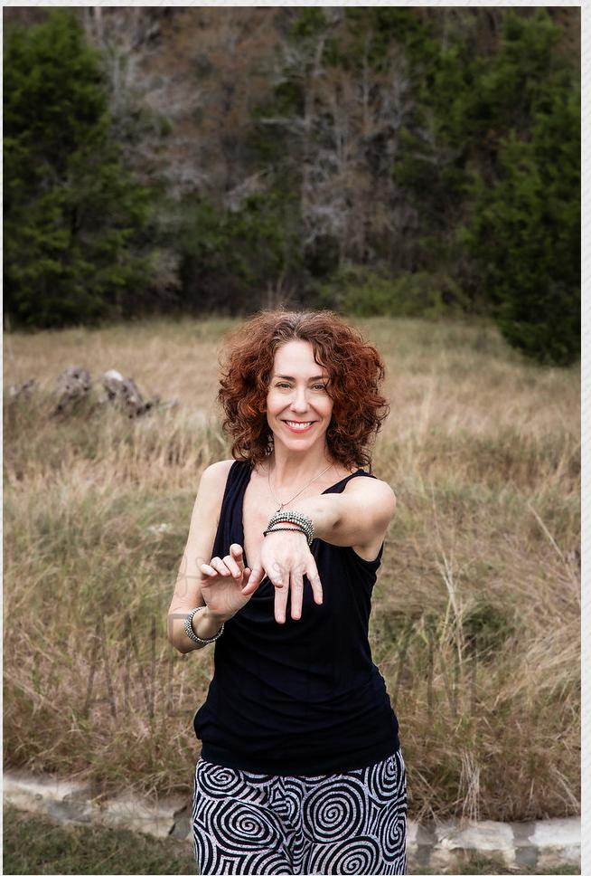
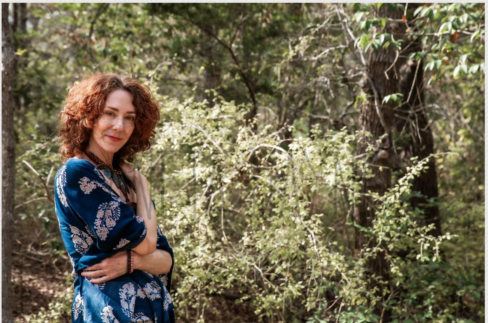

Welcome—I’m Maria. I am here to help you feel good in your body, at peace in your mind, and aligned in your life, relationships, and career. My mission is simple: to share the powerful, transformative tools that changed my own life so you can move beyond pain, step past invisible blocks, and fully reclaim your life’s vitality. You don’t have to navigate this alone—wherever you are right now is the perfect place to start.
Before we begin
You don’t have to navigate this alone.
It is so hard to blossom into who you are meant to be when you are navigating illness, destructive behavioral patterns, or invisible blocks. I have been there—and I am living proof that we can grow through our deepest challenges to find ourselves again in greater joy, strength, and purpose.
Healing is a journey, and it is my absolute honor to walk alongside you, however that looks for you.
Two pillars · Six practices
How we work together.
How we work together.
True, lasting healing begins with absolute safety. First and foremost, I meet you right where you are with nonjudgmental presence, compassion, and deep listening. Together, we look at what is holding you back today—and where you want to expand in the future. From there, we weave together a tailored combination of root-cause modalities.
For the body & physical energy
Support for people living with pain, tension, or illness, through targeted bodywork, Candace Silvers Energy Healing, and supportive Qi Gong practices.
Bodywork
Attentive, targeted work with the body to ease tension and bring back ease of movement.
Candace Silvers Energy Healing
A quiet, hands-on energy practice for rest, grounding, and integration. Nothing to perform, nothing to prove.
Qi Gong
Slow, supportive movement and breath practices you can take home with you.
For the mind, behavior & emotions
Because the mind touches every area of our health, relationships, and purpose, we work with Emotional Freedom Technique (EFT/Tapping), Systemic Family Constellations, and intuitive emotional release exercises.
EFT / Tapping

Gentle fingertip tapping on acupressure points while giving voice to what you are feeling. Simple to learn, surprisingly powerful.
Systemic Family Constellations
A way of seeing the hidden loyalties and patterns we inherit, so what has been carried can finally be set down.
Intuitive emotional release
Guided exercises for letting what has been held move through and out, at your own pace.
Guided by empathic and intuitive gifts, I offer a grounded partnership to help you clear the root causes of suffering and step into lasting wholeness.
Sessions
What a session feels like.
Sessions are offered online and in person.
1
Arrive
Talk about what is happening and what support you are looking for.
2
Experience
Explore a practice together at a comfortable pace.
3
Integrate
Talk about what came up and what might be useful afterward.

Three Hands Healing
Meet Maria
A guide, not a pedestal.
Every tool and modality I share in my practice comes from a place of deep personal experience. I know what it feels like to seek answers, which is why I’ve devoted my life to mastering the practices that continuously restore health, peace, and joy in my own body, relationships, and career.
My practice is a space of true partnership. Guided by empathic intuition and powerful energy and behavioral modalities, I am here to hold a safe container where your pain is met with understanding, and your potential is given room to bloom.
The next step
Begin where you are.
Choose a practice, find a time, and we will take it from there. No account needed.